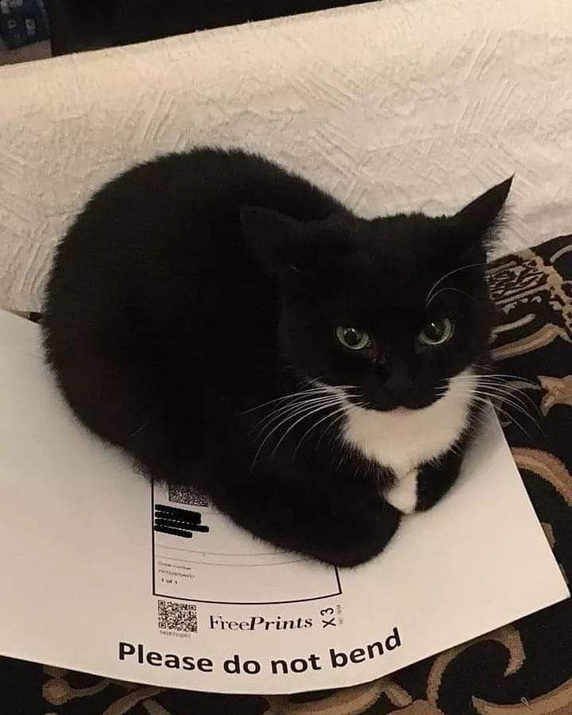

Introduction
Le  domestique est la forme domestique du sauvage est une espèce de mammifères carnivores.
domestique est la forme domestique du sauvage est une espèce de mammifères carnivores.
Selon les résultats de travaux menés en 2006 et 20071, le  domestique est une sous-espèce du sauvage issue d’ancêtres appartenant à la sous-espèce du sauvage d’Afrique (Felis silvestris lybica).
Introduction bis
Le domestique est l’un des principaux animaux de compagnie. Dans de très nombreux pays, le entre dans le cadre de la législation sur les carnivores domestiques à l’instar du chien et du furet. Essentiellement territorial, le est un prédateur de petites proies comme les rongeurs ou les oiseaux. Les ont diverses vocalisations dont les ronronnements, les miaulements, les feulements ou les grognements.